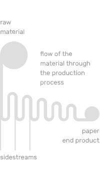
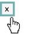

This interactive visualisation aims to provide insight into side stream valorisation opportunities for the Paper and Board Industry (PBI).
Chapter I
Introduction: the opening image is a schematic representation of the paper production process:

Chapter I explains why side stream valorisation is important.
Scroll down to start the animation. The captions will guide you through the story.
Chapter II
The graph provides an overview of valorisation opportunities and allows you to explore the details.
The colour of these elements is linked to the colour of the side stream they refer to.
Moving the mouse over any given circle will highlight the valorisation route (on the left side) that the circle represents.
Clicking an element will show a pop-up with more background information.
 Using the checkboxes above the graph enables you to select the side stream of your choice.